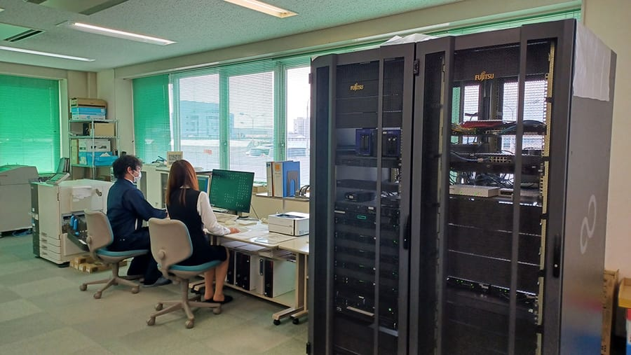
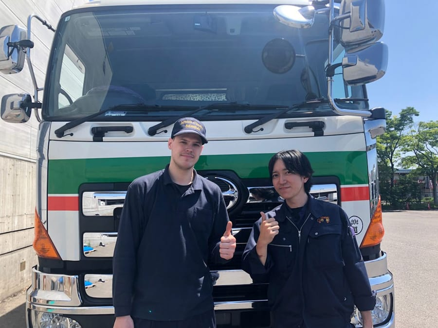
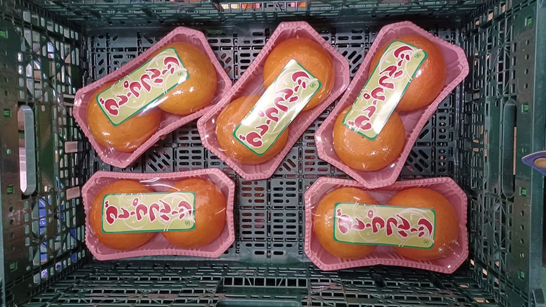
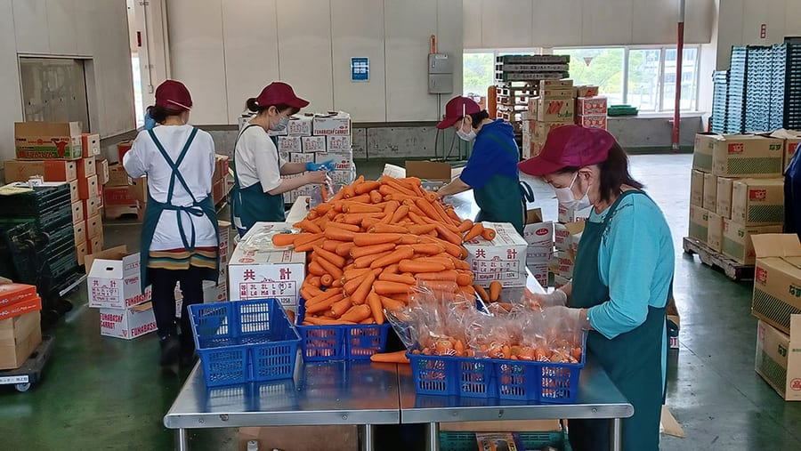
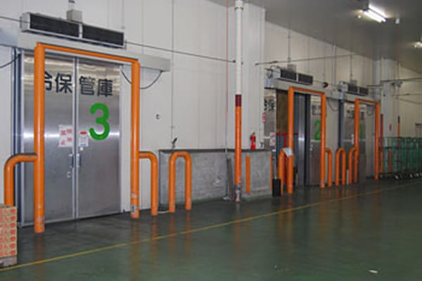
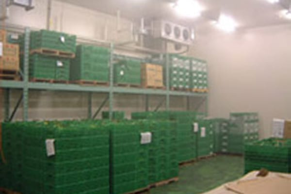
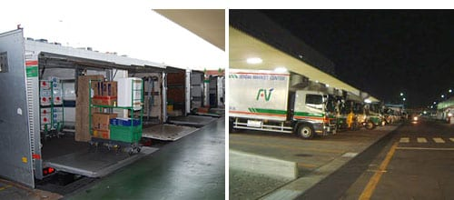
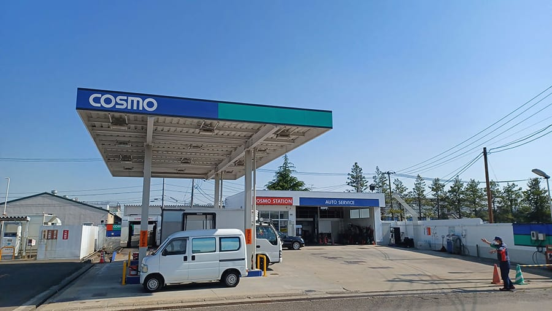
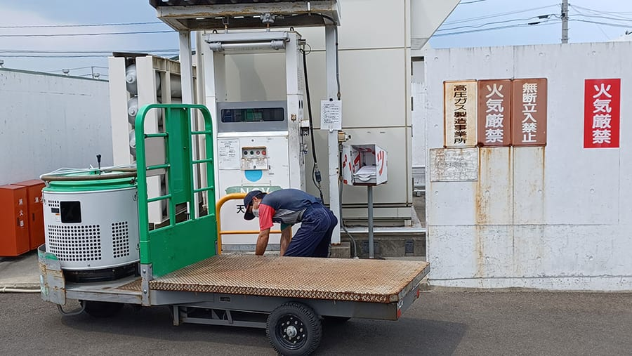

事業内容Our Business
精算・配送・加工・保管・給油。市場機能をワンストップで支える5つの共同事業を展開しています。Settlement, delivery, processing, storage, and fueling — five joint operations that support market functions in one place.
共同計算事業Shared Accounting
当事業部は、仲卸各社の精算処理を担当するとともに、受注業務におけるシステムサポートや、設計から開発・運用に至る各種システムの総合サポート、青果電算処理に関する組合員の要望・問題点の解決と技術指導を、専門のシステム担当者を配置し、毎日1日2交代制で行っています。This division handles settlement for member wholesalers and provides comprehensive system support — from design and development to operation — along with technical guidance for produce data processing, staffed by specialists working two shifts a day.
組合基幹システム運用Core System Operation
- 代払精算業務Payment & settlement
- 売掛・請求業務Receivables & billing
- 在庫・粗利管理業務Inventory & margin control
- 実績情報分析業務Performance analysis
量販店EOS業務Retail EOS
- 一括受注業務Bulk order intake
- 共同配送センター連携Delivery-center linkage
- 基幹システム連携Core-system integration
- 発注確定業務Order confirmation
その他業務Other Services
- 配送センター基幹システム運用Delivery-center system ops
- 各種システム設計・開発・運用System design & development
- 実績分析情報提供サービスAnalytics reporting service

共同配送事業Joint Delivery
組合100％出資の子会社「株式会社仙台中央卸売市場配送センター」が、事業用車両46台を配備し配送業務を行っています。（2024年4月現在）「新鮮・安全・安心」をお届けするため、輸送安全マネジメントにも継続的に取り組んでいます。Our wholly-owned subsidiary, Sendai Central Wholesale Market Delivery Center Co., Ltd., operates a fleet of 46 vehicles (as of April 2024). To deliver freshness and safety, we continuously pursue transport-safety management.
- 共同配送Joint delivery｜全組合員の青果物配送業務を執り行っています。 — delivery of produce for all member companies.
- 市内混載In-city mixed loads｜青果部のどなたでもご利用いただけるサービスとして定着しています。 — an established service open to all in the produce section.
- チャーター便Charter service｜関東〜東北各県を主に、ご要望により全国どこへでも輸送します。 — mainly Kanto–Tohoku, and nationwide on request.

青果物加工事業Produce Processing
加工センターの低温一般加工場では、果実や土の付いていない野菜（人参・ねぎなど）の袋詰、ラップ包装、テープ結束などを行います。加工品目の約8割がここでの作業で、低温加工場の活用により付加価値を創出しています。In the cold general-processing facility of our processing center, we bag, wrap, and bundle fruit and clean vegetables (carrots, leeks, etc.). About 80% of processed items are handled here, creating added value through temperature-controlled processing.


貯蔵保管・場内運搬事業Storage & In-market Transport
配送センター物流部門では、主に量販店様の店舗向けに青果物のピッキング作業を24時間体制で行っています。作業はすべて低温エリア（15℃まで管理）で行われ、センター3階の加工部門で加工された商品もここから配送されます。配送にはパワーゲート車を使用しています。The logistics division performs 24-hour produce picking, mainly for retail-chain stores. All work takes place in a cold zone (controlled to 15°C), and items processed on the 3rd floor are shipped from here using power-gate vehicles.
高湿低温庫High-humidity cold room
- 288㎡（2室）288 m² (2 rooms)
冷蔵保管庫Refrigerated storage
- 78㎡（2室）78 m² (2 rooms)
稼働体制Operation
- 24時間ピッキング24-hour picking
- 15℃低温管理15°C temperature control



給油事業Fueling Service
平成19年4月より、組合員車両・市場内作業車両・配送車両等の燃料の共同購入を行い、ハイオク・レギュラー・軽油・灯油およびタイヤ・部品等の販売を市場内で行っています。平成21年8月からは、クリーンでエコな市場を目指し、天然ガススタンドも運営しています。Since April 2007 we have jointly purchased fuel for member, in-market, and delivery vehicles, selling premium, regular, diesel, kerosene, tires, and parts within the market. Since August 2009 we have also operated a natural-gas station toward a cleaner, greener market.
登録Registration
- 登録揮発油販売業者 登録番号 2-05716号（東北経済産業局）Registered fuel retailer No. 2-05716 (Tohoku Bureau of Economy)
施設規模Facility
- 給油所 鉄骨造平屋建 110.50㎡（組合所有）Steel single-story station, 110.50 m² (cooperative-owned)
主な仕入先Main suppliers
- コスモ石油販売（株）Cosmo Oil Sales Corp.
- 仙台市ガス局Sendai City Gas Bureau

